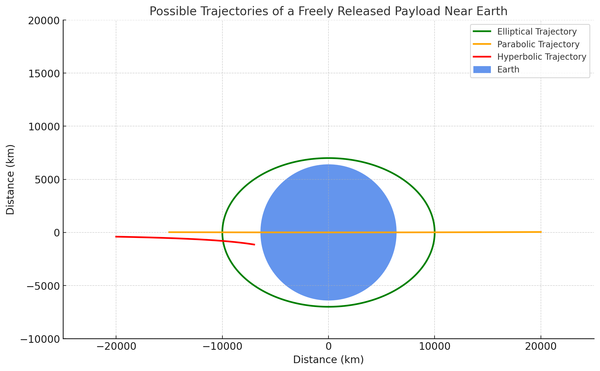
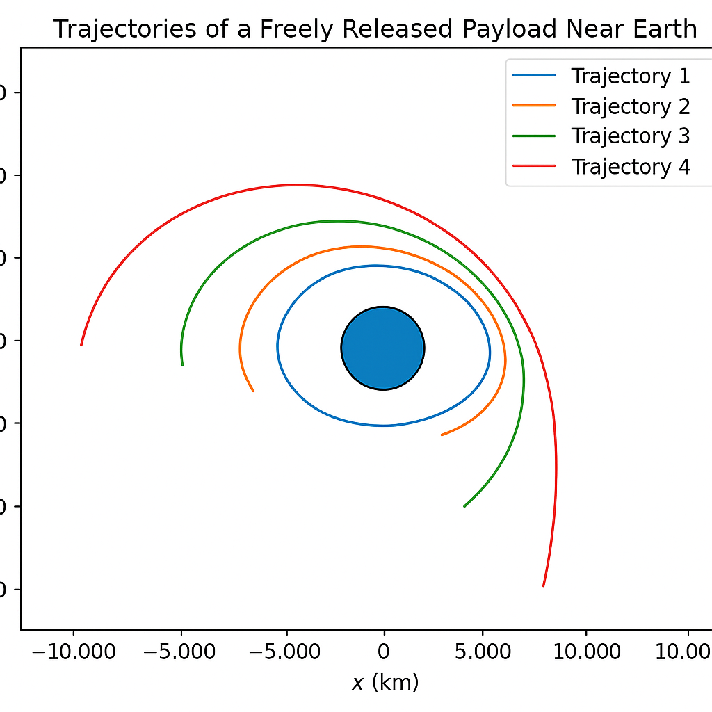
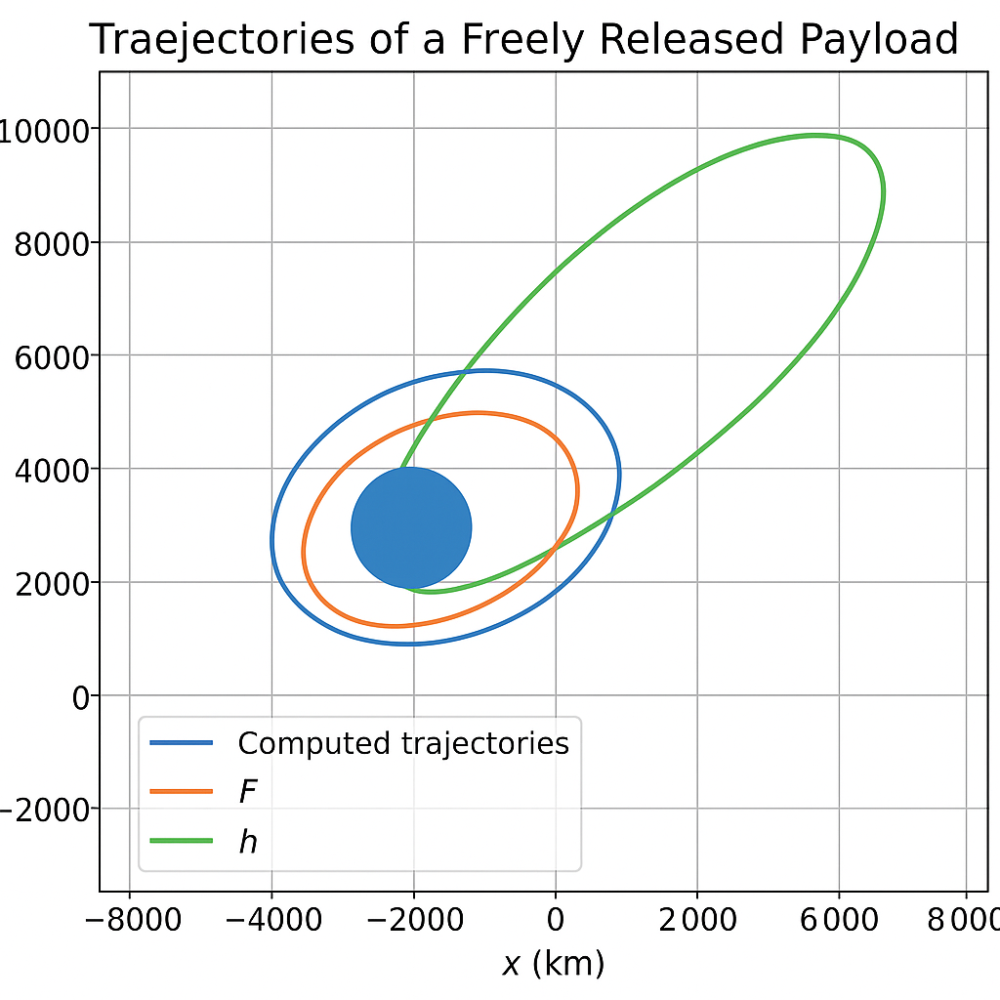
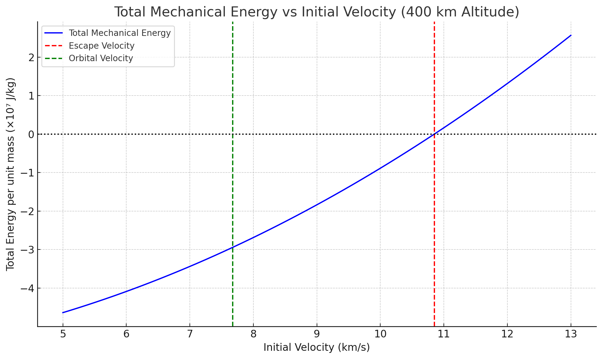
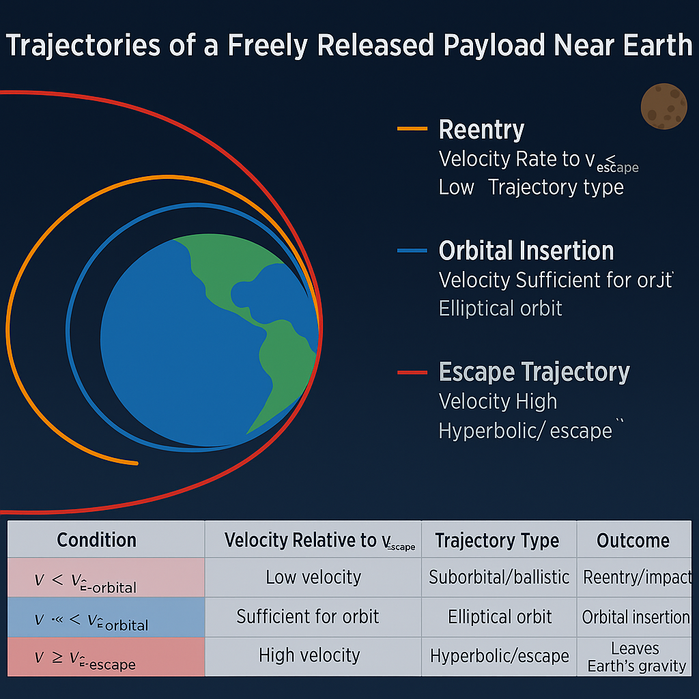
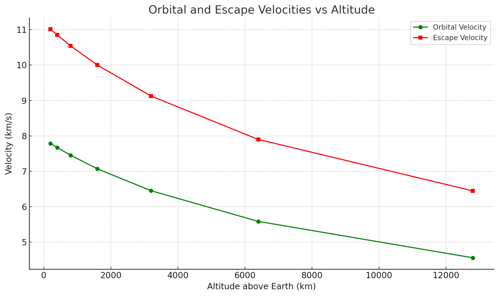
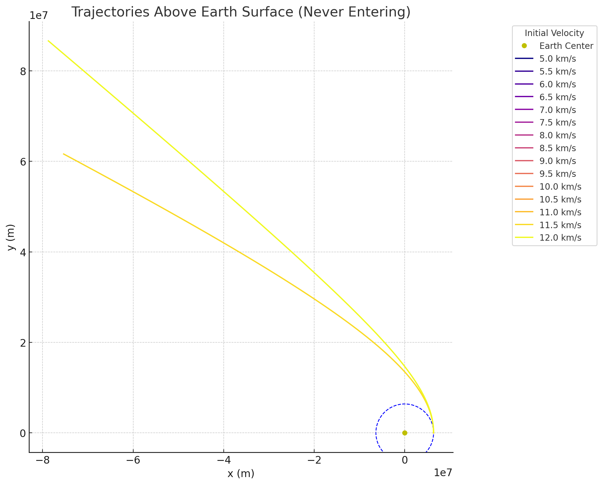
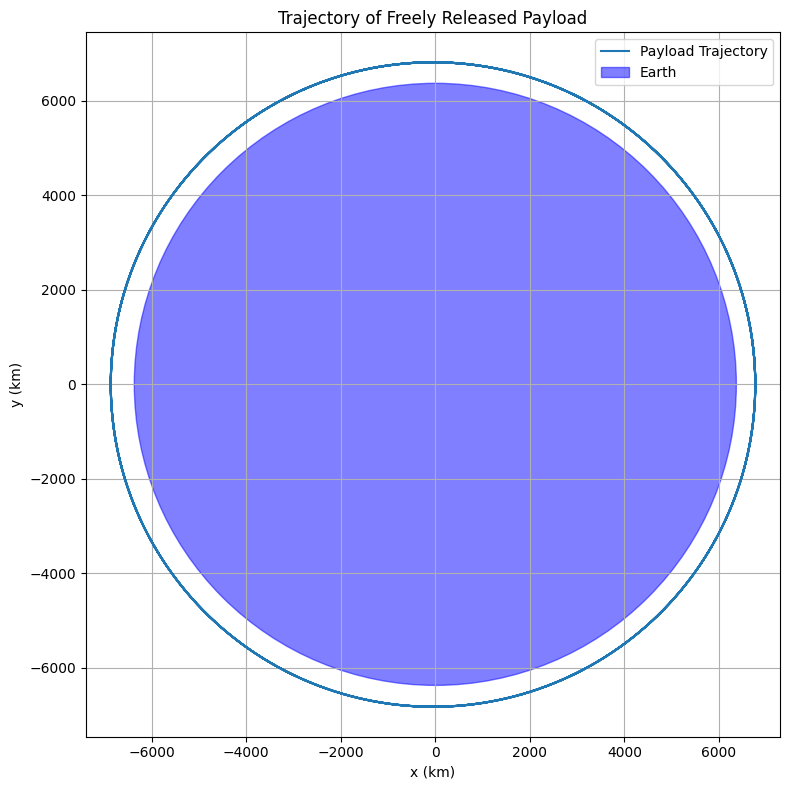

Problem 3
🚀 Trajectories of a Freely Released Payload Near Earth
When a payload is released near Earth without propulsion (i.e., under the sole influence of gravity), its trajectory depends entirely on its mechanical energy and initial velocity vector. The shape of the trajectory—whether elliptical, parabolic, or hyperbolic—is governed by classical Newtonian mechanics and conic section geometry.
🧮 Total Mechanical Energy
The total mechanical energy \( E \) of the payload is the sum of its kinetic energy (K.E.) and gravitational potential energy (U):
Where:
- \( m \): mass of the payload
- \( v \): initial speed of the payload
- \( M \): mass of the Earth
- \( r \): distance from the center of the Earth
- \( G \): gravitational constant
🌐 Classification of Trajectories
The sign and magnitude of the total mechanical energy determine the shape of the trajectory:
1. Elliptical Trajectory \((E < 0)\)
If the total energy is negative, the object is gravitationally bound to Earth. Its trajectory will be an ellipse, which includes circular orbits as a special case.
-
Velocity condition:
$$ v < \sqrt{\frac{2GM}{r}} \quad \text{(i.e., } v < v_{\text{escape}} \text{)} $$ -
Example: Most satellites, the Moon
- Shape: Closed orbit
- Eccentricity: \( 0 \leq e < 1 \)
2. Parabolic Trajectory \((E = 0)\)
If the total mechanical energy is exactly zero, the trajectory is parabolic. The object reaches the escape velocity but with zero leftover energy.
-
Velocity condition:
$$ v = \sqrt{\frac{2GM}{r}} \quad \text{(i.e., } v = v_{\text{escape}} \text{)} $$ -
Example: Idealized escape trajectory without excess energy
- Shape: Open, non-repeating path
- Eccentricity: \( e = 1 \)
3. Hyperbolic Trajectory \((E > 0)\)
If the total energy is positive, the payload is not bound and will follow a hyperbolic escape trajectory.
-
Velocity condition:
$$ v > \sqrt{\frac{2GM}{r}} \quad \text{(i.e., } v > v_{\text{escape}} \text{)} $$ -
Example: Interplanetary probes like Voyager or Parker Solar Probe
- Shape: Open trajectory
- Eccentricity: \( e > 1 \)
🌀 Eccentricity and Orbit Shape
The eccentricity \( e \) of the conic section also determines the shape:
- \( e = 0 \): Circle
- \( 0 < e < 1 \): Ellipse
- \( e = 1 \): Parabola
- \( e > 1 \): Hyperbola
The general orbit equation in polar coordinates:
Where:
- \( r(\theta) \): radial distance as a function of angle
- \( p \): semi-latus rectum
- \( e \): eccentricity
- \( \theta \): true anomaly
🔧 Energy and Velocity Relationship
Rewriting the energy expression per unit mass (specific mechanical energy):
Where:
- \( \epsilon < 0 \): elliptical orbit
- \( \epsilon = 0 \): parabolic escape
- \( \epsilon > 0 \): hyperbolic escape
Also useful is the vis-viva equation:
Where:
- \( a \): semi-major axis of the orbit
- \( r \): current distance from focus (Earth’s center)
- \( v \): orbital speed at distance \( r \)
🚀 Summary Table
| Trajectory Type | Condition on Energy | Velocity Range | Bound? | Eccentricity | Example |
|---|---|---|---|---|---|
| Elliptical | \( E < 0 \) | \( v < v_2 \) | Yes | \( 0 \leq e < 1 \) | Satellites, Moon |
| Parabolic | \( E = 0 \) | \( v = v_2 \) | No | \( e = 1 \) | Ideal escape |
| Hyperbolic | \( E > 0 \) | \( v > v_2 \) | No | \( e > 1 \) | Voyager, Pioneer |
📌 Notes
- These are idealized trajectories: they assume a two-body system and ignore perturbations (like atmospheric drag, third-body effects, and Earth’s oblateness).
- Real mission planning requires additional corrections and considerations, including launch windows, gravity assists, and orbital insertion burns.
🔭 Applications
Understanding these trajectories is vital for:
- Launching and maintaining satellites (elliptical)
- Planning planetary missions (hyperbolic escape)
- Calculating required delta-v for maneuvers
- Designing gravity assist paths and escape strategies

Trajectories of a Freely Released Payload Near Earth
This document presents a numerical approach to simulate and compute the trajectory of a freely released payload near Earth. The analysis assumes a vacuum environment (no air resistance), and the only force acting on the payload is Earth's gravitational pull.
1. Physical Model
The motion of a payload under the influence of Earth's gravity is governed by Newton’s law of universal gravitation and Newton’s second law:
Dividing both sides by the mass \( m \), the acceleration is given by:
Where: - \( \vec{r} \) is the position vector from the center of the Earth, - \( G \) is the gravitational constant, - \( M \) is the mass of the Earth, - \( r = \|\vec{r}\| \) is the magnitude of the position vector.
2. Initial Conditions
Let the initial conditions be defined as: - Initial position: \( \vec{r}_0 = [x_0, y_0] \) - Initial velocity: \( \vec{v}_0 = [v_{x0}, v_{y0}] \) - Altitude: \( h \), such that \( r_0 = R_{\oplus} + h \)
Here, \( R_{\oplus} \) is Earth's radius.

3. Numerical Integration
We use the 4th-order Runge-Kutta method (RK4) to integrate the system of ordinary differential equations:
At each time step \( t \), update \( \vec{r}(t) \) and \( \vec{v}(t) \) using RK4.
5. Visualization
After integrating over time, the trajectory \( \vec{r}(t) \) can be plotted to visualize the orbit or impact trajectory.

Trajectories of a Freely Released Payload Near Earth
The paths followed by a payload released near Earth vary based on its initial velocity and altitude. These trajectories determine whether the payload:
- enters into orbit (orbital insertion),
- reenters Earth's atmosphere (reentry),
- or escapes Earth's gravitational field (escape trajectory).
1. Orbital Insertion
When the payload's velocity is sufficient to balance gravitational acceleration but not high enough to escape, it enters a closed elliptical orbit around Earth.
This condition corresponds to:
Where: - \( v_{\text{orbital}} = \sqrt{\frac{G M}{r}} \) - \( r \) is the distance from Earth's center.
The trajectory is an ellipse, and if perfectly balanced, it becomes a circular orbit.
2. Reentry
If the initial velocity is too low, the payload lacks enough kinetic energy to maintain orbit and begins to descend toward Earth. This is referred to as suborbital or reentry trajectory.
The total mechanical energy is:
But unlike a stable orbit, the trajectory intersects Earth's surface (if we ignore atmospheric drag):
- The payload may impact Earth,
- Or reenter the atmosphere, depending on its altitude.

3. Escape Trajectory
If the velocity exceeds the escape velocity:
Then the payload has enough kinetic energy to overcome Earth's gravitational pull completely.
The total mechanical energy becomes:
This results in a hyperbolic trajectory.
Summary of Trajectory Types
| Condition | Velocity Relative to \( v_{\text{escape}} \) | Trajectory Type | Outcome |
|---|---|---|---|
| \( v < v_{\text{orbital}} \) | Low velocity | Suborbital / ballistic | Reentry / impact |
| \( v \approx v_{\text{orbital}} \) | Sufficient for orbit | Elliptical orbit | Orbital insertion |
| \( v \geq v_{\text{escape}} \) | High velocity | Hyperbolic / escape | Leaves Earth's gravity |

Conclusion
The fate of a freely released payload depends critically on its initial conditions. By controlling the magnitude and direction of its initial velocity, mission planners can achieve different outcomes: safe orbit, controlled reentry, or interplanetary escape.

Trajectories of a Freely Released Payload Near Earth
This tool simulates and visualizes payload trajectories under Earth’s gravity using initial velocity magnitude and direction.
Governing Equations
The payload is influenced solely by gravity:
Acceleration:
Velocity Conditions
- Orbital velocity:
- Escape velocity:

